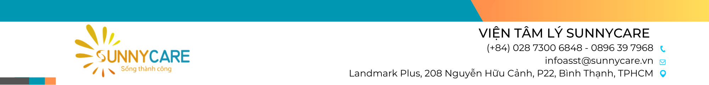

Trước hết, anh muốn gửi lời chúc mừng chân thành đến em. Em đã có một bước tiến vô cùng dũng cảm trong buổi trò chuyện hôm nay: dám nhìn thẳng vào câu chuyện "con gián" và chạm vào phần Cái bóng (The Shadow) bên trong mình.
Đó là một khoảnh khắc không hề dễ dàng. Để một người phụ nữ thông minh, bản lĩnh, luôn nỗ lực xây dựng một hình tượng độc lập, xuất sắc và có lý tưởng lớn lao như em chịu dừng lại, thừa nhận những góc khuất, những cảm xúc hỗn loạn và sự ghê tởm tự thân – điều đó đòi hỏi một sự can đảm phi thường. Trong giây phút em chia sẻ về con gián với tất cả sự xúc động và thành thật, em đã không còn dùng lý trí để trốn chạy nữa. Em đã bắt đầu bước chân vào hành trình dũng cảm nhất của đời người: hành trình thấu hiểu và ôm lấy trọn vẹn con người mình.
Anh cảm ơn em vì lá thư dài 10 trang em đã gửi cho anh trước buổi gặp. Từng con chữ trong lá thư ấy đã giúp anh cảm nhận được trọn vẹn một tâm hồn sâu sắc, giàu lòng tự trọng, một sức sống mãnh liệt như đóa hoa dại vươn lên giữa nghèo khó và giông bão, nhưng đồng thời cũng đang gánh chịu quá nhiều vết thương chưa được băng bó.
Trong buổi gặp, em đã dùng những từ ngữ mang sắc thái cảm xúc rất mạnh khi nói về con gián: "gớm ghiếc, kinh tởm, thấp hèn, chui rúc, dơ bẩn, hôi hám...".
Anh muốn em hiểu rằng: Em không hề ghê sợ con gián ngoài đời thực, mà em đang ghê sợ những phần quá khứ tổn thương mà em đã vô thức phóng chiếu lên nó. Con gián chính là tấm gương phản chiếu những góc khuất mà bấy lâu nay em chối bỏ và sợ hãi ở chính mình:
1. "Kinh tởm / Gớm ghiếc": Đó là lúc Siêu ngã (Superego) của em tự phán xét những ham muốn thể xác, sở thích BDSM, hay sự vỡ vụn sau mối quan hệ bị lạm dụng tình cảm/tình dục năm 19 tuổi.
Sự thật dịu dàng: Nhu cầu gần gũi thể xác là phản ứng sinh học tự nhiên. Mong muốn được phục tùng trong BDSM thực chất là tiếng kêu cứu của một tâm trí đã quá mệt mỏi vì phải gồng mình kiểm soát mọi thứ ngoài đời thực – em chỉ đang khao khát được "tắt nguồn", được che chở và buông bỏ sự căng thẳng trong một không gian an toàn. Còn vết thương năm 19 tuổi là sự thao túng của người khác; em là một cô gái mới lớn ngây thơ bị lợi dụng, em hoàn toàn không có tội và không có gì là "kinh tởm".
2. "Thấp hèn": Đó là vết thương từ tuổi thơ nghèo khó, mặc quần áo rách cũ, gia đình nợ nần bị người đời xỉa xói, coi thường. Nỗi sợ mình "thấp hèn" đã biến thành chiếc bẫy buộc em phải làm thủ khoa, phải nói 3 thứ tiếng, phải liên tục bận rộn và thành công để chứng minh giá trị.
Sự thật dịu dàng: Nghèo khó chỉ là hoàn cảnh xuất phát điểm, không phải là phẩm chất của em. Em như loài gián kiên cường sống sót qua mọi thảm họa địa chất – một đóa hoa dại kiên cường vượt qua nghịch cảnh cùng cực để khẳng định bản thân. Em không hề thấp hèn, em mang một sức sống phi thường. Giá trị của em là bẩm sinh, em sinh ra đã xứng đáng được yêu thương mà không cần phải liên tục chứng minh điều gì cả.
3. "Chui rúc": Đó là ký ức cả nhà phải trốn chạy giang hồ đòi nợ, nỗi sợ hãi khi đơn độc gánh chịu những tin nhắn bôi nhọ trước kỳ thi, và sự nhẫn nhục giấu kín cảm xúc thật sau lớp vỏ bọc hoàn hảo.
Sự thật dịu dàng: Khi giông bão ập xuống một đứa trẻ chưa đủ lực, biết "chui rúc" và nhẫn nại ẩn mình để bảo toàn tính mạng và nuôi dưỡng việc học chính là trí tuệ sinh tồn và bản lĩnh cao nhất. Đứa trẻ năm ấy đã làm rất tốt để cứu sống và đưa em đến vị thế hôm nay. Nay giông bão đã tan rồi, em không còn bất lực nữa. Em hoàn toàn an toàn để bước ra ánh sáng và sống tự do với chính mình.
4. "Dơ bẩn / Hôi hám": Đó là sự Xấu hổ độc hại (Toxic Shame) khi em bị người khác vu khống danh dự (bị đồn làm gái) và cảm giác bị hoen ố sau những lần bị xâm phạm ranh giới thân thể.
Sự thật dịu dàng: Bùn đất nghịch cảnh ném vào tà áo không thể làm hoen ố đóa sen tâm hồn em. Sự nhơ nhuốc thuộc về kẻ vu khống và kẻ lợi dụng, không thuộc về em. Tâm hồn và phẩm giá của em luôn tinh khôi, kiêu hãnh và đáng được nâng niu tuyệt đối.
Để những nhận thức sâu sắc hôm nay không chỉ dừng lại ở lý thuyết mà thực sự đi vào đời sống, anh thiết kế cho em 3 bài tập cụ thể dưới đây. Em hãy xem đây là những món quà chăm sóc tâm hồn mỗi ngày:
Mục tiêu: Tập cho tâm trí thói quen tự công nhận từ bên trong, tháo gỡ sự phụ thuộc vào lời khen hay sự ngưỡng mộ từ bên ngoài.
Cách thực hiện:
Mục tiêu: Hạ khiên chắn trí thức hóa (Intellectualization), buông bỏ áp lực phải tỏ ra hiểu biết hay làm chủ cuộc trò chuyện, tạo dựng sự kết nối cảm xúc chân thật.
Cách thực hiện:
Mục tiêu: Hóa giải cảm giác tội lỗi, xấu hổ độc hại và ôm ấp những phần tổn thương quá khứ.
| Từ khóa | Câu hỏi tự vấn bóc tách | Khẳng định giải thoát tự thân |
|---|---|---|
| 1. Kinh tởm | Có phải tôi đang tự phán xét ham muốn tình dục, BDSM hay tổn thương năm 19 tuổi? Tôi có nhận ra khao khát buông bỏ kiểm soát là nhu cầu được chở che an toàn? | "Cơ thể và mọi rung cảm bản năng của em hoàn toàn trong sạch. Em cho phép mình trân trọng mọi cung bậc cảm xúc mà không còn tự sỉ vả hay hổ thẹn." |
| 2. Thấp hèn | Có phải tôi sợ mình thấp hèn vì nghèo khó tuổi thơ nên phải gồng mình làm thủ khoa? Nếu không cần chứng minh điều gì cả, tôi có đủ giá trị để được yêu thương? | "Em sinh ra đã có giá trị trọn vẹn. Em tôn vinh sức sống bền bỉ của đóa hoa dại và giải phóng bản thân khỏi áp lực phải liên tục chứng minh." |
| 3. Chui rúc | Sự nhẫn nại chui rúc trốn nợ năm xưa đã giúp em bảo toàn tính mạng và ước mơ ra sao? Giờ đây giông bão đã qua, em đã sẵn sàng bước ra ánh sáng chưa? | "Em tri ân sự nhẫn nại đã cứu sống em trong giông bão. Giờ đây em hoàn toàn an toàn và tự do bước đi hiên ngang dưới ánh mặt trời." |
| 4. Dơ bẩn | Vết thương bị vu khống danh dự và bị lợi dụng thể xác có phải lỗi của em không? Đó là rác rưởi của người khác hay là bản chất của em? | "Sự nhơ nhuốc thuộc về kẻ gây hại, sự trong sạch và tôn nghiêm thuộc về em. Tâm hồn và phẩm giá của em luôn tinh khôi và đáng được yêu thương tuyệt đối." |
Để em có thể hình dung rõ ràng hành trình sắp tới và an tâm chuẩn bị tâm thế, anh muốn chia sẻ trước với em những mục tiêu trọng tâm mà hai anh em mình sẽ cùng đi qua trong Phiên 3:
Huyền Phương à, không ai có thể bước vào sự khai sáng trọn vẹn nếu từ chối nhìn vào bóng tối của chính mình. Những gì em đã trải qua – dù là nghèo khó, đe dọa nợ nần, sự bôi nhọ danh dự hay những vấp ngã tuổi 19 – không có điều gì có thể làm giảm đi phẩm giá cao quý và vẻ đẹp tâm hồn của em. Chúng chỉ là những thử thách khắc nghiệt tôi luyện nên một đóa hoa dại ngát hương và kiên cường như em hôm nay.
Em không cần phải hoàn hảo ngay ngày mai. Hãy cứ đi từng bước nhỏ, dịu dàng với chính mình, và nhớ rằng: Em không hề đơn độc trên hành trình trở về với sự tự do đích thực của tâm hồn.
• Lịch hẹn phiên tiếp theo (Phiên 3): Sẽ được thống nhất theo lịch thuận tiện nhất cho em.
• Chúc em những ngày sắp tới thật bình an, nhẹ nhõm và tràn đầy tình yêu thương tự thân.